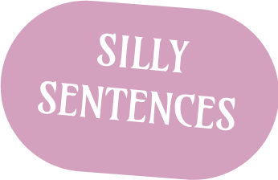
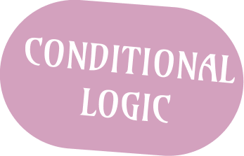
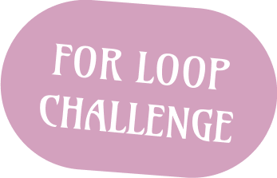
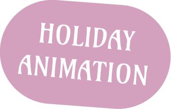
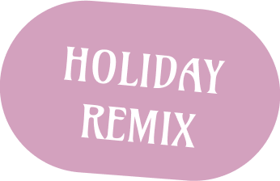

This lab was about creating a Silly Sentences program that asks the user for different words and inserts them into a paragraph template. I learned how to use the input() function to collect user information and store it in variables. I also learned how to use print() statements and variables together to create formatted output that matches a specific template.

This lab was about practicing conditional logic in Python using if, elif, and else statements. I learned how to check user input and make decisions based on numbers and words, such as determining whether a number is less than 50 or whether a word starts or ends with a vowel. I also practiced using comparison operators and creating programs that respond differently depending on the user's input.

This lab was about using a for loop and the range() function to create a repeating pattern in Python. I learned how loops can automatically repeat code while counting down from one number to another. By printing the "99 Bottles of Beer" song lyrics, I practiced using loops to generate repetitive output efficiently.

This lab was about turning a simpls holiday drawing project into an animated scene using Python in CodeSkulptor3. I learned how to use functions like draw_circle, draw_line, draw_polygon, and draw_point along with loops, and conditionals to create movement on the canvas. I also practiced organizing my code with custom functions and adding visual effects like motion, color changes, and repeating patterns to make the animation more dynamic.

This lab was about creating a 40–60 second holiday-themed remix using EarSketch and Python while applying more advanced coding and music design concepts. I learned how to use functions like fitMedia(), setEffect(), and makeBeat(), along with loops, conditionals, and custom functions to structure and control my music. I also practiced organizing a song in ABA form and using user input and effects to make my remix more interactive and expressive.